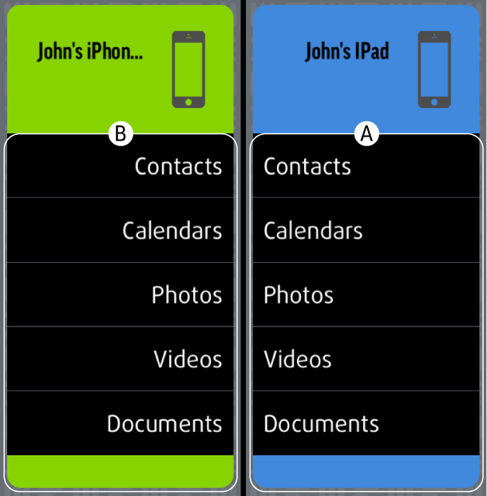

Copie de données d'un appareil supplémentaire
1. Copie d'appareil
Faites glisser l'icône (A) sur l'icône (B) à gauche.
2. Copie de catégorie
Pour copier une catégorie individuelle, faites glisser la catégorie de (A) à (B) (de droite à gauche).
